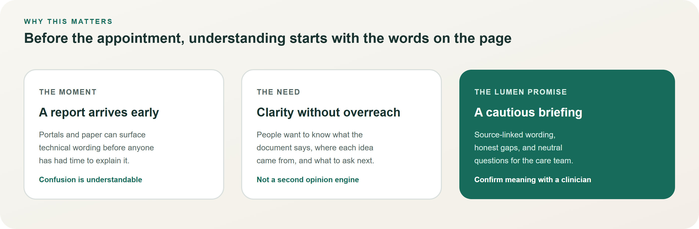
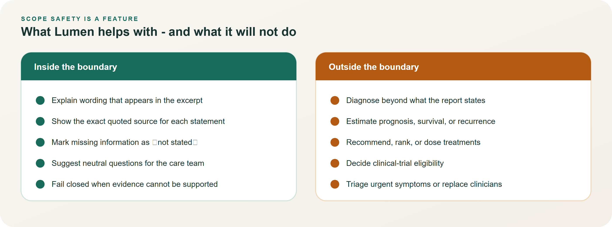
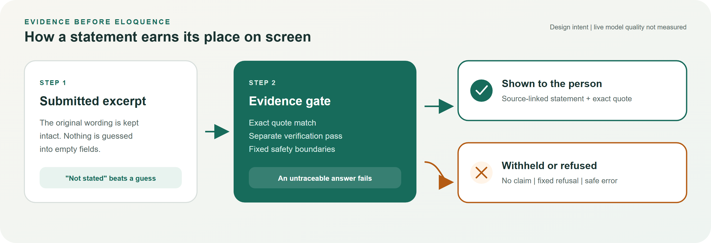

A clearer conversation starts with understanding the report.
Lumen is a cautious, source-grounded prototype that helps people make sense of wording in a cancer pathology report and prepare neutral questions for their care team — without diagnosing, predicting outcomes, or recommending treatment.
Who it is for
Adults and caregivers preparing for a care-team visit after receiving a cancer-related report, especially when the language feels unfamiliar.
What success looks like
A person can point to exact report wording, see what is and is not stated, and walk into the appointment with better questions — still confirming every meaning with a clinician.

Figure 1. The moment, the need, and Lumen’s carefully bounded promise.
The product promise, in one breath
Explain only wording that is present in the submitted excerpt.
Link every shown statement to an exact quotation.
Keep missing information as “not stated,” rather than guessing.
Offer neutral questions that support — never replace — clinical conversation.
Important: Lumen is a synthetic-only software prototype. It is not medical advice, not a diagnostic tool, and not clinically validated. It is not ready for patient use.
◉ Lumen
Executive Brief
Boundaries · Trust · Next steps
Boundaries that build trust
Lumen treats limited scope as a design feature. It will help with report wording and appointment questions. It will refuse prognosis, treatment ranking, dosing, trial eligibility, and urgent-symptom triage.

Figure 2. Inside versus outside the product boundary.
How a statement earns its place
Shown statements must pass an evidence gate: the cited wording must match the submitted excerpt, a separate verification step must support the claim, and safety boundaries must hold. If they do not, Lumen withholds the claim or returns a fixed refusal.

Figure 3. Supported path versus withheld or refused outcomes.
Current honesty check
Demo posture: model provider disabled by default; live path returns no claims.
Positive result screens in demos are labeled synthetic UI fixtures, not live model answers.
Automated software checks exist; clinician review and clinical validation have not been completed.
Responsible next step: independent clinical and patient review of task, language, and evaluation — before any real-world use is considered.
Share line: Before your appointment — understand the report, see the exact words, ask better questions. Prototype, not medical advice.